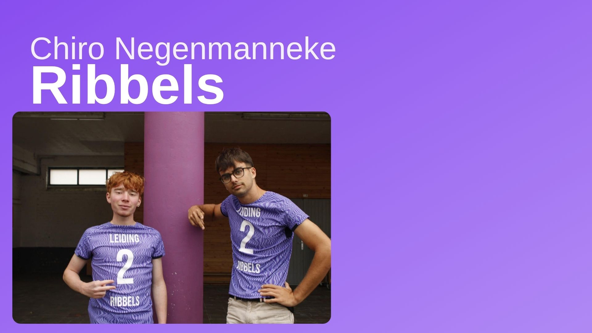
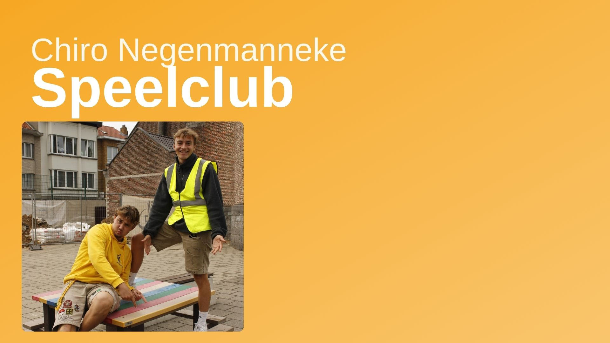
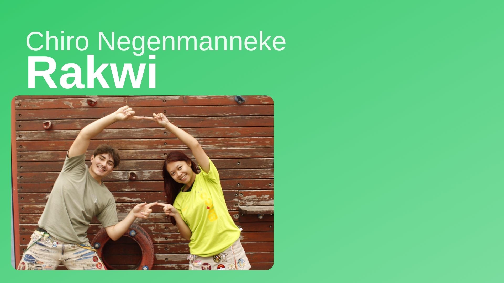
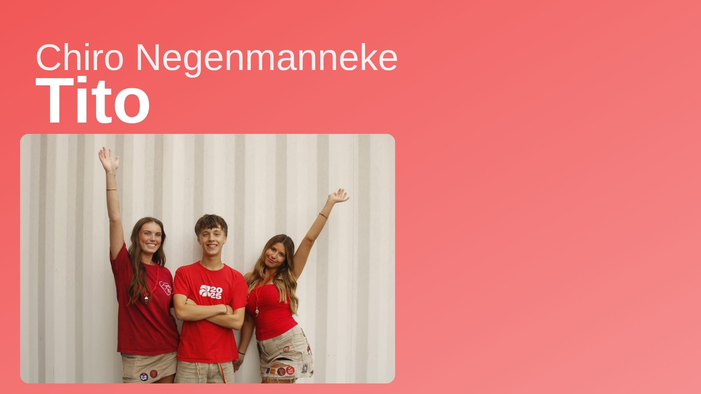
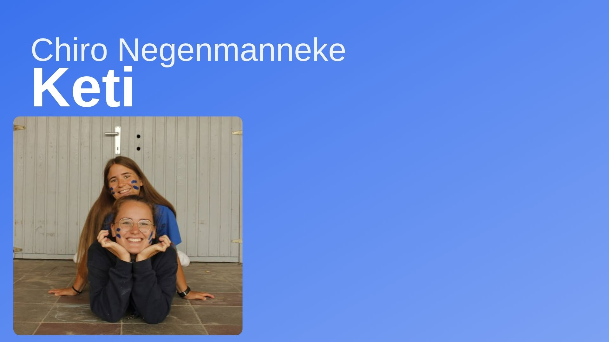
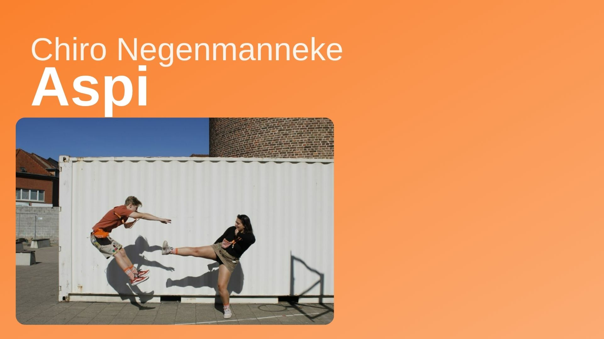

Welkom bij Chiro Negenmanneke
In de Chiro spelen we samen en beleven we het hele jaar door een leuke zondagnamiddag. Hoe meer je komt, hoe meer vrienden je maakt en hoe leuker Chiro is.






Wat is Chiro?
Tijdens de Chironamiddag spelen we in leeftijdsgroepen. Er zijn 6 afdelingen met elk hun eigen leiding. Naast de zondagen zijn er ook afdelingsweekends en als kers op de taart een 10-daags kamp.
Schrijf je inPraktisch
- Wanneer: elke zondag 14u–18u
- Waar: Gustave Gibonstraat 1A, 1600 Sint-Pieters-Leeuw
- Lidgeld: €40/jaar (verzekering & werking)
(Door je inschrijving ben je verzekerd op Chirozondagen.)
Geschiedenis
Onze geschiedenis
De geschiedenis van Chiro Negenmanneke is onlosmakelijk verbonden met de geschiedenis van de wijk Negenmanneke zelf. Wat vandaag een levendige Chirogroep is, begon in een periode waarin de buurt nog volop in ontwikkeling was. Negenmanneke was toen nog een eerder rustige plek aan de rand van Brussel, maar stilaan groeide er een hechte gemeenschap rond school, parochie en jeugdwerk.
Een belangrijke figuur in dat verhaal was pastoor Vendelmans. Reeds in de jaren 1930 zette hij zich sterk in voor de uitbouw van het parochiale leven in Negenmanneke. Hij organiseerde klasjes voor de jeugd en hielp mee bouwen aan een eigen gemeenschap in de wijk. Intussen kreeg ook de Sint-Stevensparochie vorm: de kerk werd opgetrokken vanaf 1937 en was voltooid in 1941. In die sfeer van opbouw, engagement en verbondenheid groeide ook het idee om een eigen jeugdbeweging op te richten.
Volgens de bewaarde historische samenvatting op de officiële website werd in 1939 door pastoor Vendelmans de beslissing genomen om in Negenmanneke een Chiro op te richten. In 1940 was Chiro Negenmanneke een feit. Daarmee kreeg de wijk niet alleen een parochie en een school, maar ook een plek waar kinderen en jongeren samen konden spelen, groeien en zich engageren.
De eerste jaren van de Chiro vielen samen met een woelige periode in onze geschiedenis. Toch bleef de groep bestaan en groeide ze verder uit tot een vaste waarde in Negenmanneke. Zoals ook in de historische tekst van Michaël Dusollier uit 2000 wordt aangehaald, kende de Chiro doorheen de jaren zowel bloeiperiodes als moeilijkere momenten. Er waren tijden van grote populariteit en enthousiasme, afgewisseld met rustigere jaren, maar de groep bleef telkens opnieuw overeind dankzij de inzet van leiding, leden en oud-leiding.
Doorheen de decennia werd Chiro Negenmanneke veel meer dan alleen een jeugdbeweging. De Chiro werd een echte ontmoetingsplaats voor generaties kinderen en jongeren uit de buurt. Vriendschappen ontstonden er, tradities werden doorgegeven en heel wat leiding zette er haar eerste stappen in engagement en verantwoordelijkheid. Zo groeide de Chiro uit tot een vertrouwd deel van het leven in Negenmanneke. Dit alles bleef bovendien nauw verbonden met de Sint-Stevensschool, waar de groep al jarenlang haar werking uitbouwt. Ook vandaag bevinden de Chiro-lokalen zich nog steeds op die historische plek.
Naast de gewone zondagen en kampen bouwde de Chiro in de loop der jaren ook haar eigen tradities uit. Een mooi voorbeeld daarvan is het Chinees etentje, dat al teruggaat tot het einde van de jaren 1970 en uitgroeide tot een vaste afspraak voor de groep en de bredere buurt. Zulke tradities tonen hoe sterk Chiro Negenmanneke verankerd is in het lokale leven.
Vandaag blijft Chiro Negenmanneke verder schrijven aan dat verhaal. De groep bestaat inmiddels al 85 jaar, een mijlpaal die mooi aantoont hoe sterk de werking doorheen de tijd is gebleven. Tegelijk kijkt de Chiro ook vooruit. De plannen voor nieuwe jeugdlokalen tonen dat er nog altijd geloof en vertrouwen is in de toekomst van de groep, zodat ook volgende generaties kinderen en jongeren in Negenmanneke hun eigen Chiroverhaal kunnen beleven.
Chiro Negenmanneke is dus niet zomaar een jeugdbeweging. Het is een stukje geschiedenis van de wijk zelf: ontstaan uit de inzet van een lokale gemeenschap, gegroeid door de jaren heen, gedragen door generaties leiding en leden, en nog altijd springlevend. Wat begon in 1940, leeft vandaag verder in elke Chirozondag, elk kamp, elke activiteit en elke herinnering die er wordt gemaakt.